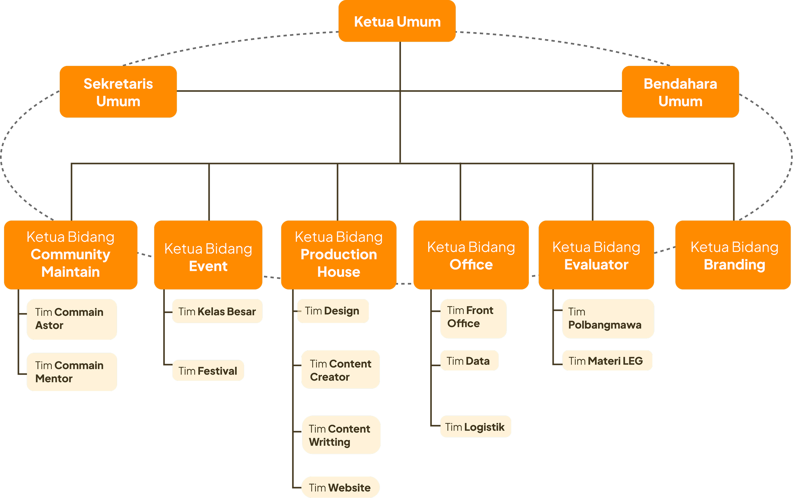

Tim Petra Sinergi adalah organisasi yang mengurus program pembinaan mahasiswa baru dan Astor. TPS dibentuk sebagai sinergi dari lembaga kemahasiswaan (diwakili BEM) - Pelma - DMU untuk menjadi keluarga pertama mahasiswa baru untuk mempersiapkan diri sebelum masuk pembinaan-pembinaan yang ada di Petra.
Wujud sinergi itu adalah dengan teman-teman LK, Pelma, dan dosen-dosen DMU untuk menggarap pembinaan ini bersama-sama dengan menyambut adik-adik kelas mereka sebagai Astor, mentor, dan pembina dari Tim Petra Sinergi. Pembinaan yang dijalankan berupa kelompok diskusi dengan pembahasan yang dikurasi melalui Pusat Kepemimpinan Kristen.
Pembinaan ini bertujuan untuk mengajak mahasiswa baru menyadari tentang makna hidup, makna diri, tujuan hidup, dan kritis berpikir tentang realitas kehidupan yang mereka jalani, supaya mereka dapat mulai membangun hidup yang berhasil dan bermakna.
